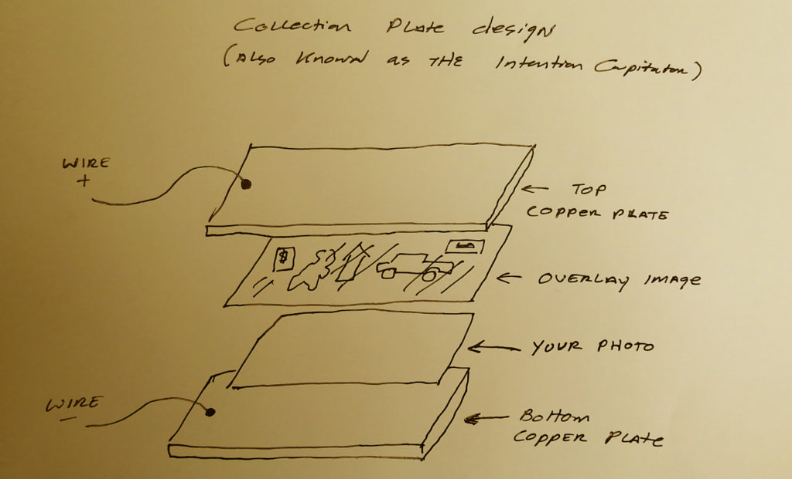
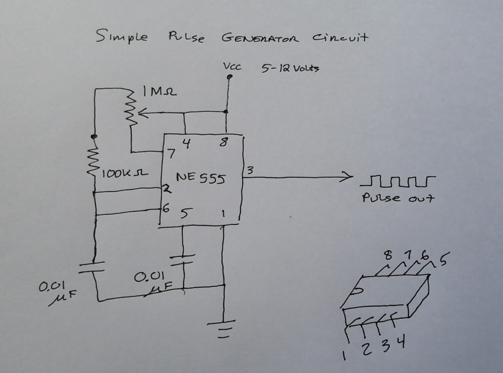
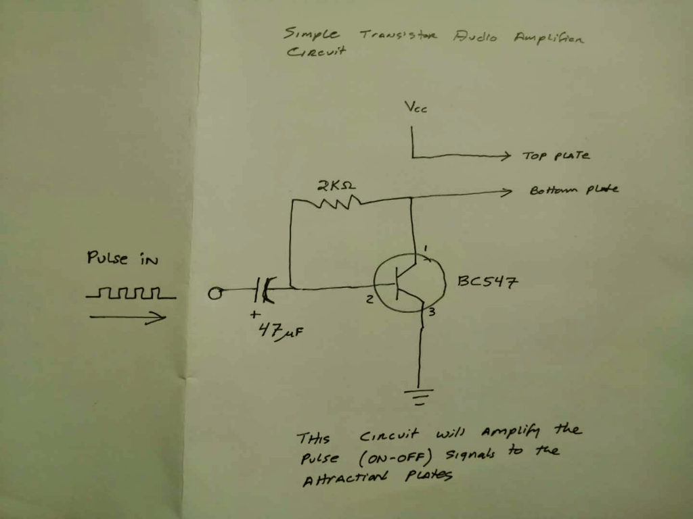

Let’s tackle something really weird. (And coming from me at Metallicman, that’s saying a lot.)
Here we are going back into the world of quantum physics. Which is, by nature, really really weird. It’s “Twilight Zone” stuff, ya all.
Now, as I have repeatedly mentioned before (over and over again), thoughts create our reality. Thus, the control of our thoughts enable us to create the life of our dreams.
Thoughts create our reality.
Woo! Woo!
In other posts I have covered ways and techniques in how to best “pray” or utilize intention to improve our life. That is… if you pray, and you do it properly, your dreams will come true. (Ah. More or less. The “Devil is in the details”. Don’t ya know.)
I have (in the past) concentrated on the “Prayer plus intention board” method as it is simple, robust and works. But you all should know that there are many other methods that one can use. You do not need to follow my suggestions. You can go your own way.
Here we talk about some of these other methods.
These other methods have varying degree of success. The key in all cases is one’s thoughts and belief in the effectivity of the mechanism and system that it represents.
Introduction
Our reality is a constant stream of world-lines that we visit momentarily, one after the other. We call this “the passage of time”.
What we think of, and what we concentrate on, establishes which world-lines we move toward. If we think bad thoughts, bad world lines start to appear. If we think good thoughts, good world-lines appear.
Imagine your self sitting behind the wheel of a car. The road lies before you and you see houses and trees alongside the road. But you get in a bad mood... Suddenly the sky darkens and hail starts to pelt the car. You get angrier, and cracks start forming in the road. However, if you are in a good mood... The sun shines brightly. Flowers start to appear at the side of the road, and people start waving to you as you drive by.
If we control how and what we think of, we can manifest the world-lines that actually appear to us. By doing so we have the ability to generate the life that we live and the reality that surrounds us. For good, or bad.
The control of thought is not easy. It requires discipline and perhaps some training.
Which is pretty much why our life is all “messed up” right now. In nations (like the United States) with the “freedom” of the press, and a culture of “do yer own thang” everything seems to have gone to “ape shit”. The craziest thoughts, amplified by the internet, television and radio has resulted in a chaotic world of unimaginable complexity and strife.
- Aging model marries her golden retriever after 221 bad dates
- How eating fat makes you thin
- What It’s Like to Date Your Dad – The Cut
And while your consciousness has made this reality your very own, it is the thoughts of the “shadow quanta consciousnesses” that are assaulting your and your life every single day.
You need to [1] control this barrage, and [2] you need to control your own thoughts regarding it.
In almost all my other writings I have placed an emphasis in using the”prayer plus intention board” method. Its a good general method that works quite well, and is easily adaptable to most people regardless of age, or culture.
Many Techniques
Now it should be very obvious that there are all manner of techniques to manipulate the world-lines. So many, many other techniques. In the past I discussed numerous ways involving technology…
- Dimensional portal.
- EBP w/ ELF implants.
- Aluminum foil wrapped travelers.
- Use of a car to move in and out of world-lines.
- John Titor’s saga.
- Popping in and out of reality (on bicycle or just walking)
Here we continue on ways (techniques) that an average person can use to control their reality. I offer up five additional methods. The methods that I will cover here are…
- Self-hypnosis
- A actual “wish machine”
- Use of a talisman or mark
- Ritual
- Hemi-sync as a gateway
[1] Self-hypnosis
Since the key to the control of the manifestation of our reality involves thought, then it should become clear that if we program our brain on how to think, that we can begin to manifest changes to our reality.
The technique doesn’t rely on specific thoughts, so much as how your brain tends to generate the thoughts.
There is an entire world of self-hypnosis techniques and practitioners. It runs the gambit from sessions with a trusted hypnotherapist to self-hypnosis using audio-tapes or similar devices. As you can read elsewhere these techniques are conventionally used to stop bad habits (smoking), or to improve your personality (fear of flying, etc). Here we will concentrate on a method that you can use much the same way your use your prayer affirmations. Only in this case we will use it to TRAIN YOUR BRAIN to think thoughts in a certain way.
This is a pretty simple method.
The first step [1] is to create a recording that you will listen to when you are undergoing self-hypnosis.
This recording will have [1.a] an entry section. This section is one that is designed to put you into a self-induced trance. In it you will tell your self to start walking down stairs. Each star that you tread upon, you will get into a more restful and deeper state of mind. You will start at stair 100, and go down steps, 99, 98, etc. At step 0 you will come to a door. You will only be able to open the door when you are relaxed enough to begin the session.
At [1.b] you will continue the entry section, only that you are more mentally suggestive. You will now be on a level platform. You will tell yourself to be receptive to the following commands. That you will convene your mind to work with your consciousness. That the next group of phrases will describe the situations, and realities that you will create for yourself. That your mind and your consciousness will work together to manifest those thoughts, and ideas into a combined reality that you will live within.
Then, you can [2] start placing your verbal affirmations, your prayers, your desires and all associated warnings, and specification here. Just follow the same guidelines that I have specified in making your intention / prayer list.
What ever you do, don't follow the "weak wristed" affirmations found on the internet. Such as... I trust that I am on the right path. I give myself the care and attention that I deserve. I accept my emotions and let them serve their purpose. I give myself permission to do what is right for me. Instead, your affirmations should describe what your life; your reality is like. It should program your mind to be tuned to that new reality. Like this... I am calm, cool and collected. People respect me. People like me, and help me when needed. Money comes to me with ease, I never worry about money.
Then [3] add the “decompression” routine. This part walks you out of the self-hypnosis session. It tells you that you will not consciously remember what transpired clearly, but that your mind and your consciousness is now effectively programmed to do everything within their ability to manifest the reality as specified earlier. You will tell yourself to slowly enter into a normal day to day consciousness only that your reality will begin to change per your instructions. That you will awake rested and fine after the session.
Once you have made the self-hypnosis tape, you need to set up a system to use the tape. Often this means a part of your day where you can go into isolation and privacy. You will need to be able to close the door and tell people to leave you alone and not disturb you. You will also need to set aside an amount of time longer than the length of the recorded tape.
You can use a computer and a *.mp3 file that you generated, or an old fashioned cassette player or anything in between. Just make sure that whatever happens there won’t be any interruptions like some kind of advertisement pop-up in the computer display or the batteries int he cassette player running out.
Wear headphones, head sets or ear buds.
Lie down and put a light blanket on your lower torso. Your body temperature will start to decrease during the session. Dim the lights or lower the curtains. Do not allow anything to disturb you. that includes cats jumping on your belly or dogs barking for your attention.
Like the “prayer and intention board” you will do these daily sessions until you feel that you have had enough. Then you would put them aside and forget about them. Eventually things will manifest, or you will start a new campaign.
[2] A “wish machine”
Since the key to the control of the manifestation of our reality involves thought, then it should become clear that if we program a machine to repeatedly process the thought quanta for us, we won’t need to.
You can construct a “wish machine”, and it will actually work.
This is not to be confused with other kinds of "wish machines", mechanisms or other things related to "Orgone" generation. This functions totally and completely different. The only thing that connects the two is the similarity in name.
The general idea behind this is to create a vortex, or “waterfall” like device that would siphon up some of the (thought related) quanta that surrounds you, your life, your abode and press them through a “filtering mesh” that would create a new emerging reality for you.
Collect Quanta > Filter it to what you intend > Broadcast
In this particular instance, the term "quanta" refers to those quanta that are associated with [1] thoughts and [2] the mechanics of the consciousness - physical brain interface. It does NOT refer to all quanta.
A “machine” in this case replaces your action with your mind and physical activity to achieve your goals. It’s nothing more than an automaton.
Without getting into too much detail, understand that the components that make up the atoms, the electrons and everything in our physical world is a timeless, dimensionless entity somewhat understood or known as quanta. They flutter about and enter all world-lines and cluster around your primary consciousness location. They are not tied to physical locations, thus their proximity to your thoughts are what is of interest here.
This quanta, that which is associated with the moment to moment operation of your consciousness within a reality, is what you want to utilize.
You want to push that particular brand or type of quanta… without your active participation… through a mesh or a filter.
To do this, you utilize a machine.
In this instance we will look at the general construction of two types of “wish machines”…
- [2a] Electronic
- [2b] Hydraulic.
[2a] Electronic type “wish machine”
Firstly we look at an electronic “wish machine”.
The electronic device can be considered to be similar to this machine. (NOT identical.) And essentially, you place a “wish” or “image” or “concept” upon a surface, run some electrical current through it and broadcast it to the surrounding area. The device listed (in the link above) will not work very well, because of some structural defects. But the concept is similar to this discussion herein.
The system process is as follows;
- Collect the thought-related quanta.
- Pulse the quanta.
- Amplify it.
- Push it through a “filter”.
- Broadcast it back.
Of the components we can create a very simple “machine” that would do our work for us. The major problem with this is the physical limitations of the collection system.
Collection plate. This is a series of two plates. Both preferably copper that you sandwich together with an image arrangement. The arrangement consists of a transparent overlay of what you want to add to your life, over a picture of yourself. Make sure that that picture of you does not have any faults, as you will broadcast and amplify those faults in the device.
As such, you will present two charges to the system. One wire would connect to the top plate, the other wire would connect to the bottom plate. Combined the image & overlay would be sandwiched between and the entire apparatus would combine to form a simple capacitor.

The capacitor is a two terminal electrical conductor and that is separated by an insulator. These terminals store electric energy when they connected to a power source. One terminal stores positive energy and the other terminal stores negative charge. Charging and discharging of the capacitor can be defined as, when electrical energy is added to a capacitor is called charging whereas releasing the energy from a capacitor is called as discharging.
Capacitors include dielectrics made from all kinds of materials. In this case the dielectric is the image or the paper upon which the affirmations are written upon.
The simplest form of a capacitor is “ parallel plate capacitor” and its construction can be done by two metal plates that are placed parallel to each other at some distance. This is what the collection plate actually is, electrically speaking.
Pulsing the Quanta. Since the capacitor can reach stability in a very short period of time; meaning that one side gets charged positively while the other side is charged negatively, you need to constantly turn the power on and off to have any kind of electrical movement through the system. If you don’t, the charge will just sit there. Seemingly doing nothing (not really the case, but let’s not get too technical here.)
Electrical movement will “carry quanta” along with it. So you want the key quanta to move with the electrical system in operation.
This kind of movement is important. As it “refreshes” the system. It charges and discharges your desires, over and over again. It has the same net affect of reading all your affirmations over and over again within a split second (um. Well, depending on the construction of the capacitor you created.).

Pulsing the system is easy to do. You just add a pulse circuit in the machine. The simplest is a simple timer (like a 555 or 556 DIP) with an output going direct to a transistor. (I’m just trying to keep it simple here.) It acts as a gate and you can charge and discharge the plate until “the cows come home”. (Charge, discharge. Charge, discharge. Charge, discharge.)
Amplify. Now you can amplify the signal. You can change the current, the voltage, the power and the other aspects of the mechanism. But I am not all that convinced that there will be a corresponding amplification in the intensity of the “wishes”.
Certainly there is a relationship of sorts. The more electrons in movement, means the more quanta in movement. But how about those quanta associated with thought? The “thought quanta”. As far as I understand it, the mere presence of the device is enough to secure “thought quanta” movement.

Personally, I believe that it is the speed at which the electrons switch back and forth to the plates that have the biggest impact. This is the “frequency” of the device.
Never the less, the system can be amplified with an “amplification circuit”. It’s just an electrical device that changes the scope of the signal to or from the plates. In other words, “why not?”
Filter. In this mechanism, the collection plate is the same as the filter. The collection plate is actually both plates in the capacitor while the filter is the dielectric image or (if you prefer) word-laden paper sandwiched in between.
The machine is most effective for single thoughts, or single-use concepts. It might not work as well for (say) a list of affirmations. So to properly use this device, you will need to create a specific dielectric.
What you do is create a base image. Usually a picture of yourself.
Then create an overlay of what you want to surround you with. The most effective method is to make a collage of things or ideas / concepts that you want. Then print it in a printer on clear acetate. Which makes a transparent image overlay.
Then your dielectric is simply the photo of you with the image overlay on top of it. Both sandwiched in between the two contact plates within the capacitor.
Now, that being said, the more astute readers will simply tear apart an old laptop and place the screen between the two plates. Then rotate desktop images in sequence. But that is a far more complex and involved DIY project to list herein. I'll cover it elsewhere at another time. OK?
Broadcast. Finally, you do want to broadcast this system. But that’s the beauty of it. You see, the plates that you use as a capacitor are also the broadcast antenna. While it is on, and the “thought quanta” are moving back and forth through that composite image that you created, that… is in itself… all that is required.
And that is it.
I provided some electrical schematics for the more electrically inclined hobbyists out there to construct. If you want, I can throw together a complete DIY post on how to construct this mechanism yourself. It's not hard, but if you've never taken on this kind of project before it might be too daunting. Besides, novices shouldn't play with electricity. Don't try it unless you know what you are doing.
But why waste the time. There are other solutions…
The rules of the physical world work the same throughout the different sciences. The only difference is their form. So let’s look at a hydraulic version…
[2b] Hydraulic type “wish machine”
As long as things are in movement around and through your “intention image”, the associated “thought-related quanta” will also move through that image.
Well, you can achieve a similar effect by placing your (previously mentioned) “intention capacitor plates” under a stream of running water.
Obviously, you must not make any rookie mistakes…
- No electricity of any kind or type.
- The plates are not necessary. You just need to hold the images together somehow.
- Place the image-sandwich under the water and let it run and run and run.
And that, boys and girls is all that there is to it.
Oh,…
One very important point. Your physical presence must be near the device. Or else the effect of the machine will entangle with the quanta of others aside from yourself.
Obviously you will run into a problem with privacy. Because sooner or later someone is going to run into your little image collage and their thoughts will impact on the intentions that you are trying to manifest.
[3] Use of a talisman or mark (iconology)
Since the key to the control of the manifestation of our reality involves thought, then it should become clear that if you associate yourself with a particular symbol or mark that the thoughts and the history associated with the mark (or symbol) will now be associated with you.
- The historical thoughts associated with that symbol.
- What you (yourself) associate with that symbol.
- What others around you associate with that symbol.
This is both good and bad.
Which is why, boys and girls, I advise NOT getting tattoos or body adornments until you fully appreciate the consequences of your actions. Words… actions… images… and symbols all come with attraction or repellent qualities. You need to be absolutely positive that your attachment to iconology is absolutely what you want.
Here we look at various ways to utilize iconology to manifest intention.
[3a] The Intention Experiment
This is a book that pretty much compiled the scientific experiments related to intention and ESP. It is in agreement with some of the investigations that were performed elsewhere and in alignment with my understandings. All of which are explained within the book “The Intention Experiment” by Lynne Mctaggart.
In short, you can “bless” an object through providing “good will” or “prayer”. The object would retain that quantum alignment, and then when you carry that object around, you will obtain the blessings and positive quanta associated with it.
In practical application, this means that you can create your own talisman.
Anything can become a talisman. You need to pray and perform some kind of meaningful "ritual" or event to distinguish the thoughts associated with the talisman. It is the thoughts that you associate with it that are critical. When you discharge thoughts or emotion to the talisman you must center yourself in peace and serenity. You might mediate or perform other actions to accomplish this.
It operates differently from prayer affirmations. Instead you create a talisman that will give you “luck” or “advantage” in your day to day life.
[3b] Feng Shui
This is how BaZi Chinese traditional “horoscope” (Feng Shui Bracelets) systems work. Indeed, if you go to China, you might be surprised how many people wear these bracelets of beads. Wood beads, stone beads, complex intertwined red rope bracelets.
Again, this is a method to improve your “luck” or create advantage during “non-auspicious situations”. It is similar to the methodology as described in “The Intention Experiment” except that it is based on a theory (or belief) in cycles of non-visible groupings of quanta.
In Chinese horoscopes / astrology they have mapped out movements of non-physical associations. These objects go by many names and there are no English equivalents. As these non-physical objects move about your reality, they can off-set your balance. The goal is always to maintain perfect physical balance in all things. The use of these bracelets or iconology is to assist in balancing off the effects of the non-physical reality.
[3c] Catholic iconology
This is how Catholic iconology works. Here, a icon becomes the target for your directed thoughts and intentions.
Most Catholics utilize a combination of prayer types.
They might wear a talisman, charm or image of a favored Saint or Jesus. These are always blessed within a church.
They also follow a distinct ritual of scripted prayers. In general they run through a litany of prayers directed to a specific person, idol or concept. The Virgin Mother Mary, Saint Peter, and others are often petitioned alongside the prayers and blessed talismans.
It should be of interest that non-Catholics can utilize the power of intention associated with all the Catholic iconology.
Many Catholics keep a statue in their yard to bless their home and family with.
[3d] Golden Dawn / Aleister Crowley
It is also what Satanic rituals, Golden Dawn, and the writings of Alex Crowley rely upon. There is a great deal of work revolved in ritual and symbology here. In fact, even the Ozzy Osbourne song “Mr Crowley” refers to Alex Crowley as it’s all “symbolic”.
Aleister Crowley was an English occultist, ceremonial magician, poet, painter, novelist, and mountaineer. He founded the religion of Thelema, identifying himself as the prophet entrusted with guiding humanity into the Æon of Horus in the early 20th century. A prolific writer, he published widely over the course of his life.
Once a major player in the Hermetic Order of the Golden Dawn, Crowley’s falling-out with the secret society within only a few years of his 1898 induction set a pretty good precedent. We really don’t want to get into the history of all this muck. What we do want to get into is the belief how ones thoughts can control one’s reality…
For us, at this stage, we are concerned with “Thelema“.
The concept had been around for a long time, but it was Aleister Crowley who created the blend of Western ideals and Eastern mysticism that became Thelema. Even though there’s a lot written on it, it’s sort of an odd philosophy, in that it can be applied in many different ways and interpreted differently by different individuals.
There are some basics, though, that Crowley outlined: The most famous of these tenets is his infamous “Do what thou wilt shall be the whole of the Law” line. Even that’s up for interpretation.
Some say that it clearly means that you can do whatever the heck you want to, and you’re still within the accepted guidelines of the philosophy.
A somewhat alternative interpretation, though, brings ethics and morality back and says that it simply means that everyone has a divine purpose and nature inherent within them.
I interpret it as a freedom to control your own reality as you feel fit. As such, by doing so, you are utilizing thoughts and ritual to alter and control your reality.
- Collected PDF’s by Aleister Crowley – Internet Archive
- Free Ebooks by Aleister Crowley – Occult Underground
- Aleister Crowley Books – Magick Books Library
- Who Is Aleister Crowley? The Truth About His Life and Work
- Aleister Crowley Books for Beginners – Aristocrats of the Soul
[3e] The Goetia: The Lesser Key of Solomon the King
Here is a subset of the Alex Crowley / Golden Dawn belief structure. You would conjure up a demon (a non-physical entity in possession of a certain type of specialized power) through symbol and ritual. Then once conjured, you would ask them to perform a task for you for a price.
Each demon is associated with a symbol.
You do not need to perform a conjuring ritual. You can just display the symbol of the demon on objects, clothing, or tattoos and expect to have the attributes of that particular demon manifest in your life. For after all, each symbol is now associated with thoughts…thus giving it power.
The Goetia (pronounced Go-EY-sha) is Book 1 of the Lemegeton (Lesser Key of Solomon), a grimoire that circulated in the 17th century and is penned in the name of King Solomon. This translation/compilation comes from SL MacGregor Mathers in 1904.
According to kabbalah scholar, Gershom Scholem, the text was not originally Jewish and was only translated into Hebrew in th 17th century. He describes the book as “a melange of Jewish, Christian, and Arab elements in which the kabbalistic component was practically nil.” (Scholem, Kabbalah)
Many of the demons found in the Goetia were initially published in the 16th century by Johann Wier. Curiously, a handful were left out. The Goetia also uses some of Collin de Plancy’s Dictionnaire Infernal illustrations.
This system does work, but it is fraught with danger and concern. You must absolutely careful when using the iconology established by others. For i might come with other associations and “baggage” that you might not want in your life.
[4] Ritual
Since the key to the control of the manifestation of our reality involves thought, then it should become clear that if you utilize ritual, you will be magnifying your thoughts as every action involving the ritual comes complete with it’s own set of thoughts. This is true whether it is a Catholic ritual, or an occult ritual.
The system should not be a surprise.
If words are culled with the ability to manifest reality, shouldn’t actions as well? Well, they absolutely do. In fact, how you say your prayer affirmations are just as important as just reading them out loud. By putting passion into your vocalizations, you add an extra dimension to the effort that you are trying to undertake.
Ritual frees up thought and replaces it with action. Our thoughts associated with the ritual begin to act automatically. That auto-action amplifies the combined thoughts that go along with the ritual. It’s a feed-back loop and very powerful.
Ritual adds depth and “color” to an affirmation. It can be used alone or in conjunction with other methods of controlling and directing one’s thoughts.
[5] Hemi-sync as a gateway
Since the key to the control of the manifestation of our reality involves thought, then it should become clear that if we clear our minds of all thought, that we can focus on the thoughts that we want to, to the exclusion of all else.
The deeply relaxing sound patterns of Hemi-Sync® Meditation will gently lead you into powerful, free-flow explorations and leave you centered, focused and totalls refreshed. -Monroe Institute
Hemi-sync has many applications from thought control, to out-of-the-body-experiences, to remote viewing. In fact, it was utilized by the CIA for a spell, and not all of the results are unclassified.
If you have never experienced using the hemi-sync method, it might be interesting and instructive to obtain some tapes and listen to them.
- Hemi Sync: Official website for binaural music | Hemi-Sync.com
- Hemi-Sync® Unlimited on the App Store
- Hemi-sync music, videos, stats, and photos | Last.fm
- Amazon.com: hemisync
- ABOUT HEMI-SYNC® – The Monroe Institute UK
Warnings
Items, physical items, can “absorb” thought components. This can be good, as in the case of “blessed” objects, and can be problematic as in “cursed” objects.
Do not be under the assumption that physical objects cannot absorb thoughts and obtain “properties”. They can. That is why every language in the world has a word describing “cursed objects”.
Quantum Physics and Intention
Here’s some links to the relationship between quantum physics and thought.
- Quantum Physics Explains How Your Thoughts Create Reality
- Quantum Physics, Spirituality And Your Thoughts
- Manifestation – The Mindspace of Quantum Physics
- Part 1: Using Quantum Physics to…Manipulate Reality …
- Manifestation, magic and Quantum physics – are they all …
- Quantum Physics and the power of thought
- Quantum manifestation // how it works in 17 seconds …
- The Quantum Mind: How We Can Transform Our Reality …
- The Extraordinary Scientific Proof That … – HuffPost
- How Quantum Physics Explains Manifestation
Conclusion
Thoughts create our reality.
There are different techniques that one can use to focus, alter, control or magnify thoughts. Some of which are in common use, such as the Catholic iconology, and other shunned or frowned upon like the Golden Dawn. Some are considered to be “fringe” and “tin foil hat” subjects like the “Wish Machine”, and some are in use by various elements of the United States government like the Hemi-sync Gateway.
You can use what ever method you feel most comfortable with.
Remember, unless you have direct control of your thoughts and actions, you will never be able to have control over your life. Control requires discipline of thought.